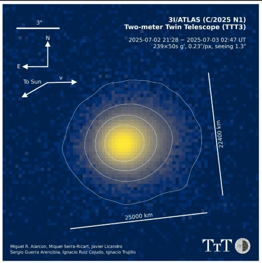

spectral analysis
Spectral analysis showed the presence of water ice, carbon dioxide and organic compounds, the presence of Nickel and Iron. A surprising discovery was the evaporation of Nickel at a great distance from the Sun, where the temperature is very low. This indicates unusual mechanisms for the release of Nickel. The James Webb Space Telescope has shown that the ratio of carbon dioxide to water ice in the comet is 8 to 1, which is one of the highest ratios ever observed. The researchers found that the comet emits a green glow due to the presence of diatomic carbon particles that respond to ultraviolet radiation from the Sun.